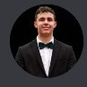

Jsem ve druhém ročníku Otevřené informatiky na Mendelově univerzitě. Nejvíc mě baví věci, které reálně něco dělají: automatizace, propojení softwaru s hardwarem a malé nástroje, které mi ušetří čas. Poslední dobou hodně zkouším, kam se dá v takových projektech zapojit AI.
Před vysokou jsem vystudoval ekonomiku a podnikání se zaměřením na informatiku. Vedle školy pracuju, takže vím, co je zodpovědnost a dochvilnost. Hledám brigádu nebo částečný úvazek v IT v Brně.
Každé ráno stáhne ceny vybraných ETF, zlata a bitcoinu, vyhodnotí moje pravidla a když se něco splní, pošle mi upozornění na mobil s krátkým komentářem od AI. Běží sám přes GitHub Actions.
REST API, které přes sériovou linku čte z Arduina teplotu a světlo a ovládá RGB LED. Má automatický a ruční režim a simulaci, takže se dá vyvíjet i bez hardwaru.
Webový trenažér na rozbor síťových rámců z hex výpisu (Ethernet, IPv4/IPv6, ARP, TCP/UDP, DNS). Používám ho na přípravu na zápočet z Počítačových sítí.
Desktopová aplikace na psaní všemi deseti. Píšeš proti „stínu“ svého nejlepšího pokusu, výsledky se ukládají do žebříčku.
Evidence včelstev v Javě: stanoviště, prohlídky, medobraní, statistiky, ukládání do JSON a unit testy.
Konzolová dungeon hra v C++. Můj první větší objektový projekt: dědičnost, polymorfismus a návrh v UML.